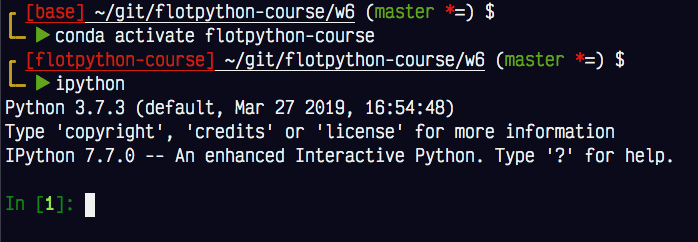
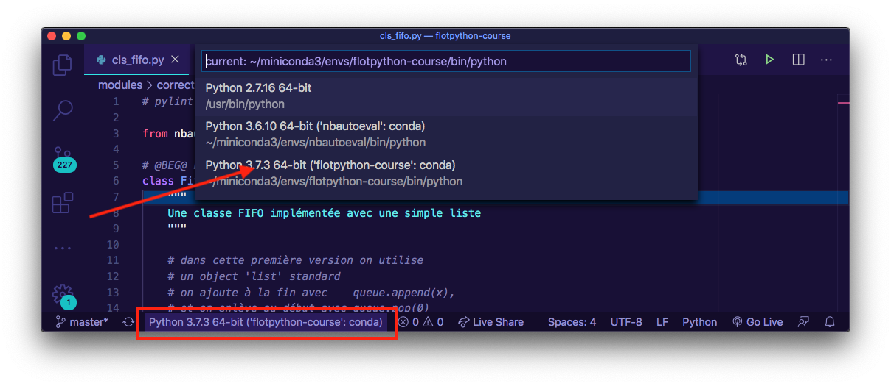

Imports et organisation du code¶
Modules et packages¶
La notion de package est une extension de la notion de module
de même qu’un module usuel correspond - en général - à un fichier .py
le package correspond à un dossier
Et de même qu’un dossier est un cas particulier de fichier, un package est un cas particulier de module.
C’est-à-dire notamment que
un package est aussi un module
simplement, alors que dans un module usuel, les attributs sont des objets de type code (fonctions et classes typiquement)
dans un package on va trouver des attributs qui sont aussi des modules
Exemple¶
Voici un un programme Python réparti sur 3 fichiers, qui ne sont pas dans le même dossier
./mainimport.py
./folder/
foo.py
bar.py
# le programme principal est dans le dossier racine
%cat mainimport.py
# pour importer une fonction
# qui se trouve dans folder/foo.py
from folder.foo import function
function("hello")
# le premier fichier utilisé est dans le dossier 'folder'
%cat folder/foo.py
# le module bar se trouve dans le même dossier
# le plus simple du coup c'est d'utiliser
# ce qu'on appelle un import relatif comme ceci
from .bar import Bar
# maintenant je peux utiliser la variable Bar
def function(x):
print(Bar(x))
# a son tour, foo.py utilise un troisième fichier, dans le même dossier folder
%cat folder/bar.py
# aucun import ici, juste une simple classe
class Bar:
def __init__(self, value):
self.value = value
def __repr__(self):
return f"Bar({self.value})"
On peut exécuter le programme comme d’habitude
# avec le ! on fait comme si cette commande était tapée dans le terminal
!python mainimport.py
Bar(hello)
Et donc pour bien préciser le vocabulaire, dans mainimport.py :
l’objet
folderdénote un packageet
folder.foodénote un module
import folder.foo
# un package est un module
type(folder)
module
# dans lequel se trouvent
# d'autres modules
type(folder.foo)
module
__init__.py¶
Dans ce premier exemple, si je fais simplement
import folder
il ne va .. rien se passer de particulier; on va bien créer un objet module, mais celui-ci sera vide !
Pourquoi ? eh bien le fait d’importer un module ça revient à exécuter le code qui est dedans; mais dans le dossier lui-même, il n’y a pas de code !
Si on voulait changer ce comportement, on pourrait créer un fichier qui s’appelle __init__.py dans le dossier; et dans ce cas-là le fait d’importer le module-package va bien exécuter le code dans __init__.py
Pour illustrer cela, on va créer un second dossier folder2 qui a exactement le même contenu que folder sauf qu’on y a ajouté un __init__.py qui contient ceci :
%cat folder2/__init__.py
# le code dans un __init__.py
# est exécuté lors du chargement du package
# avec cet import, on force le chargement de folder2.foo
# si l'appelant fais simplement 'import folder2'
from .foo import function
# ce qui fait que maintenant si j'importe juste le package
import folder2
folder2.function('Hi')
Bar(Hi)
De cette façon, j’ai pris la fonction dont le nom canonique est
folder2.foo.function
et je l’ai en quelque sorte promue pour qu’elle soit accessible aussi comme
folder2.function
Les imports¶
Pour résumer rapidement les différentes formes :
import module
définit la variablemodule(qui désigne un objet de type module)import package.module
importe le package, et le module, et définit la variablemoduleimport module as othername
pareil, mais la variable locale qui désigne le module estothernameet pasmodulefrom module import attribute
le module est chargé entièrement, mais cette forme définit seulement la variableattributefrom module import attribute as othername
pareil, mais on définit la variableothernameet non pasattributefrom module import att1, att2 as newname
on peut importer plusieurs attributs d’un coup
Notez aussi, c’est important pour les performances :
c’est relativement coûteux de charger un module
aussi, l’interpréteur se “souvient” des modules déja chargés
et donc on peut importer de manière répétitive sans impact notoire sur les performances
Comment sont cherchés les modules et packages ?¶
Pour faire le plus simple possible, lorsque vous écrivez import tutu,
on cherche un dossier tutu, ou un fichier tutu.py, selon les règles suivantes :
d’abord dans le dossier où se trouve le point d’entrée
puis dans la variable d’environnement
PYTHONPATHpuis à l’endroit où sont installés les
pip install ...
Le point d’entrée¶
Le point d’entrée, c’est le fichier que vous passez à l’interpréteur Python; dans l’exemple plus haut avec mainimport.py, on lance
python mainimport.py
et donc le point d’entrée est mainimport.py, son dossier c’est le dossier où on est - le dossier courant - et donc c’est là qu’on à chercher; c’est comme ça qu’on a pu faire import folder, car folder est bien dans le répertoire courant
PYTHONPATH¶
Le fait qu’on puisse configurer l’algorithme de recherche des modules, au travers de cette variable d’environnement, est pratique dans certains cas très spécifiques; mais pour votre usage, retenez simplement ceci : il ne faut pas s’en servir !!
pip install¶
Naturellement, vous l’avez déja constaté par vous même, les librairies installées avec pip install sont bien entendu trouvées lorsque Python essaie d’importer.
C’est intéressant parce que notamment, - modulo une contrainte très légère - on peut utiliser pip install pour installer notre propre code.
On va voir ça en détail plus bas dans cet exposé.
Comment organiser les sources de votre projet Python¶
Où on va voir que :
c’est bien de grouper son code dans un package
mais à première vue ça casse tout, cependant pas de panique !
il ne FAUT PAS tripoter la variable
PYTHONPATHil faut au contraire créer un
setup.py, et ensuite lancer une fois
pip install -e .
pour pouvoir utiliser le code en mode développeur
Contexte¶
Vous venez d’écrire un super algorithme qui simule le climat de l’an 2100, et vous voulez le publier ? Nous allons voir ici comment organiser les sources de votre projet, pour que ce soit à la fois
pratique pour vous de tester votre travail pendant le développement
facile de publier le code pour que d’autres puissent l’installer et l’utiliser
et éventuellement facile pour d’autres de contribuer à votre projet.
Les infrastructures¶
En 2020 on ne travaille plus tout seul dans son coin ; il est à la portée de tous d’utiliser et de tirer profit d’infrastructures, ouvertes et gratuites (pour les usages de base au moins) :
Pour ce qui nous concerne ici, voici celles qui vont nous être utiles :
PyPI - (prononcer “paille - pis - ail”) pour Python Package Index, est l’endroit où chacun peut publier ses librairies
github - ainsi que ses concurrents gitlab et bitbucket - sont bien sûr des endroits où l’on peut déposer ses sources pour partage, sous la forme de dépôt
git
Optionnellement, sachez qu’il existe également des infrastructures pour les deux grandes tâches que sont la documentation et le test, souvent considérées - à tort - comme annexes :
readthedocs est une infra qui permet d’exposer la documentation
travis est - parmi plein d’autres - une infrastructure permettant d’exécuter une suite de tests
S’agissant de ces deux derniers points : souvent on s’arrange pour que tout soit automatique ; quand tout est en place, il suffit de pousser un nouveau commit auprès de github (par exemple) pour que
tous les tests soient repassés (d’où le terme de CI* = Continuous Integration) ; du coup on sait en permanence si tel ou tel commit a cassé ou non l’intégrité du code ;
la documentation soit mise à jour, exposée à tout le monde, et navigable par numéro de version.
Alors bon bien sûr ça c’est le monde idéal ; on ne passe pas d’un seul coup, d’un bout de code qui tient dans un seul module bidule.py, à un projet qui utilise tout ceci ; on on n’a pas forcément besoin non plus d’utiliser toutes ces ressources (et bien entendu, aucun de ces trucs n’est obligatoire).
Aussi nous allons commencer par le commencement.
Le commencement : créer un package¶
Le commencement, ça consiste à se préparer à coexister avec d’autres librairies.
Si votre code expose disons une classe Machine dans le fichier/module machine.py, la première chose consiste à trouver un nom unique ; rien ne vous permet de penser qu’il n’y a pas une autre bibliothèque qui expose un module qui s’appelle aussi machine (il y a même fort à parier qu’il y en a plein !).
Aussi ce qu’on va commencer par faire c’est d’installer tout notre code dans un package.
Concrètement ça va signifier se mettre dans un sous-dossier, mais surtout d’un point de vue des utilisateurs potentiels de la classe, ça veut dire qu’au lieu de faire juste :
from machine import Machine
on va décider qu’à partir de maintenant il faut toujours faire
from bidule.machine import Machine
et de cette façon tous les noms qui sont propres à notre code ne sont accessibles que via l’espace de noms bidule, et on évite les conflits avec d’autres bibliothèques.
Choisir le nom du package¶
Bien sûr ceci ne fonctionne que si je peux être sûr que bidule est à moi, de sorte que personne demain ne publie une librairie qui utilise le même nom.
C’est pourquoi je recommande, à ce stade, de s’assurer de prendre un nom qui n’est pas déjà pris ; en toute rigueur c’est optionnel, tant que vous ne prévoyez pas de publier votre appli sur pypi (car bien sûr c’est optionnel de publier sur pypi), mais ça coûte moins cher de le faire très tôt, ça évite des renommages fastidieux plus tard.
Donc pour s’assurer de cela, on va tout simplement demander à pypi, qui va jouer le rôle de registrar, et nous garantir l’exclusivité de ce nom. Vous pouvez soit chercher votre nom directement dans le site pypi, ou bien utiliser pip
pip search bidule
Le nom est libre, pour toute la suite je choisis bidule comme mon nom de package.
Vous trouverez dans ce repo git https://github.com/flotpython/bidule un microscopique petit projet qui illustre notre propos.
Adapter son code¶
Une fois que j’ai choisi mon nom de package, donc ici bidule, je dois :
mettre tout mon code dans un répertoire qui s’appelle
bidule,et modifier mes importations ; maintenant j’importe tout au travers du seul package
bidule.
Donc je remplace les importations partout ; ce qui avant aurait été simplement
from machine import Machine
devient
from bidule.machine import Machine
Remarque : imports relatifs¶
Lorsqu’un fichier a besoin d’en importer dans le même package, on a le choix ; par exemple ici, machine.py a besoin d’importer la fonction helper du fichier helpers.py, il peut faire
from bidule.helpers import helper
mais aussi plus simplement avec un import relatif :
from .helpers import helper
remarquez le . dans .helpers, qui signifie dans le même package que moi.
Je recommande toutefois de ne pas se précipiter avec ces imports relatifs, et notamment de ne pas les utiliser dans un point d’entrée (le fichier qu’on passe à l’interpréteur Python) car ça ne fonctionne pas dans ce cas.
C’est tout cassé¶
À ce stade précisément, vous constatez .. que plus rien ne marche !
En effet, comme on l’a vu dans le complément sur le chargement des modules, Python recherche vos modules dans l’ordre
le dossier du point d’entrée
la variable d’environnement
PYTHONPATHles dossiers système
Et donc si vous m’avez suivi, vous devez avoir quelque chose comme
mon-repo-git/
bidule/
main.py
machine.py
helpers.py
mais alors quand vous faites
$ python bidule/main.py
Traceback (most recent call last):
File "bidule/main.py", line 1, in <module>
from bidule.machine import Machine
ModuleNotFoundError: No module named 'bidule'
on va chercher du coup un module bidule à partir du répertoire du point d’entrée qui est le dossier bidule/, donc on ne trouve pas.
Le mauvais réflexe¶
Du coup naturellement, on se dit, ça n’est pas grave, je vais tirer profit de la variable PYTHONPATH.
Alors disons-le tout net : Ce n’est pas une bonne idée, ce n’est pas du tout pour ce genre de cas qu’elle a été prévue.
Le fait de modifier une variable d’environnement est un processus tarabiscoté, même sans parler de Windows, et cette approche est une bonne façon de se tirer une balle dans le pied ; un jour ou l’autre la variable ne sera pas positionnée comme il faut, c’est sûr.
Bref, il ne faut pas faire comme ça !!
Le bon réflexe : setup.py¶
Non, le bon reflexe ici c’est d’écrire un fichier setup.py, et de l’utiliser pour faire ce qu’on pourrait une installation en mode développeur. Voyons cela :
Je commence donc par créer un fichier setup.py à la racine de mon repo git, dans lequel je mets, pour commencer, le minimum :
# minimal setup.py to install in develop mode
from setuptools import setup, find_packages
setup(
name="bidule",
packages=find_packages(),
)
Attention : nous sommes en 2020 et il faut utiliser le package setuptools, qui ne fait pas partie de la librairie standard (et non pas le module distutils qui, lui, en fait pourtant partie) ; donc comme d’habitude si c’est nécessaire, faites dans le terminal :
pip install setuptools
Installation en mode developpeur : pip install -e .¶
Avec ce fichier en place, et toujours à la racine de mon repo, je peux maintenant faire la formule magique (toujours dans le terminal)
$ pip install -e .
Obtaining file:///Users/tparment/git/flotpython-course/w6/mon-repo-git
Installing collected packages: bidule
Attempting uninstall: bidule
Found existing installation: bidule 0.0.0
Uninstalling bidule-0.0.0:
Successfully uninstalled bidule-0.0.0
Running setup.py develop for bidule
Successfully installed bidule
L’effet de cette commande est de modifier mon environnement pour que le répertoire courant
(le . dans pip install -e .) soit utilisé pour la recherche des modules. Ça signifie que
je peux maintenant lancer mon programme sans souci :
$ python bidule/main.py
... déroulement normal
Grâce à l’option -e, je peux modifier mon code dans le répertoire courant, ce sera bien ce code-là qui sera utilisé ; cette précision pour ceux qui penseraient que, comme on fait une installation, cela pourrait être fait par copie, mais ce n’est pas le cas, donc sauf gros changement dans le contenu, on n’a plus besoin de refaire le pip install -e .
Un setup.py plus raisonnable¶
Au delà de cette première utilité, setup.py sert à configurer plein d’aspects de votre application ; lorsque votre projet va gagner en maturité, il sera exécuté lorsque vous préparez le packaging, lorsque vous uploadez le package, et au moment d’installer (comme on vient de le voir).
Du coup en pratique, les besoins s’accumulent au fur et à mesure de l’avancement du projet, et on met de plus en plus d’informations dans le setup.py; voici, que j’essaie de mettre dans l’ordre chronologique, quelques ajouts très fréquents reportez-vous à la doc pour une liste complète :
nameest le nom sous lequel votre projet sera rangé dans PyPIpackagesest une liste de noms de packages ; tel qu’on l’a écrit, cela sera calculé à partir du contenu de votre dépôt ; dans notre cas on aurait pu aussi bien écrire en dur['bidule'];
dans les cas les plus simples on apackages == [ name ]versionest bien entendu important dès que vous commencez à publier sur PyPI (et même avant) pour que PyPI puisse servir la version la plus récente, et/ou satisfaire des exigences précises (les applis qui vous utilisent peuvent par exemple préciser une version minimale, etc…)
Cette chaine devrait être compatible avec semver (semantic versioning)
i.e. qu’un numéro de version usuel contient 3 parties (major, minor, patch), comme par ex. “2.1.3”
le termesemanticsignifie ici que toute rupture de compatibilité doit se traduire par une incrémentation du numéro majeur (sauf s’il vaut0, on a le droit de tâtonner avec une 0.x; d’où l’importance de la version 1.0)install_requires: si votre package a besoin d’une librairie non-standard, disons par exemplenumpy, il est très utile de le préciser ici ; de cette façon, lorsqu’un de vos utilisateurs installera votre appli avecpip install bidule,pippourra gérer les dépendances et s’assurer quenumpyest installé également ; bien sûr on n’en est pas là, mais je vous recommande de maintenir dès le début la liste de vos dépendances iciinformatifs :
author,author_email,description,keywords,url,license, pour affichage sur PyPI ;
une mention spéciale à propos dedescription_long, qu’en général on veut afficher à partir deREADME.md, d’où l’idiome fréquent :setup( ... long_description=open('README.md').read(), long_description_content_type = "text/markdown", ...
etc… beaucoup d’autres réglages et subtilités autour de
setup.py; je conseille de prendre les choses comme elles viennent : commencez avec la liste qui est ici, et n’ajoutez d’autres trucs que lorsque ça correspond à un besoin pour vous !
Packager un point d’entrée¶
Assez fréquemment on package des librairies; dans ce cas on se soucie d’installer uniquement des modules Python.
Mais imaginez maintenant que votre package contient aussi un point d’entrée - c’est-à-dire en fin de compte une commande que vos utilisateurs vont vouloir lancer depuis le terminal. Ce cas de figure change un peu la donne; il faut maintenant installer des choses à d’autres endroits du système (pensez par exemple, sur linux/macos, à quelque chose comme /usr/bin).
Dans ce cas surtout n’essayez pas de le faire vous-même; c’est beaucoup trop compliqué à faire correctement !
Pour illustrer la bonne façon de faire dans ce cas, je vous renvoie pour les détails à un exemple réel, mais pour l’essentiel :
je vous conseille d’écrire tout le code en question dans une classe habituelle, que vous rangez normalement avec les autres ;
cette classe expose typiquement une méthode
main(), qui retourne, pour suivre les conventions usuelles :0si tout s’est bien passé1sinon
vous créez un module
__main__.pyqui se contente de créer une instance et de lui envoyer la méthodemain- voir l’exemplevous déclarez cela dans
setup.pyqui se chargera de tout :-)
Voici tout ceci illustré sur un exemple réel.
Dans cet exemple, le package (PyPI) s’appelle apssh, la commande qu’on veut exposer s’appelle apssh, du coup on a
un dossier
apsshpour matérialiser le packageun module
apssh/apssh.py, qui définitune classe
Apssh, qui expose une méthodemain()
Voici les différents codes; le détail de la classe elle-même n’est pas pertinent (c’est très long), c’est pour vous montrer un système de nommage, disons habituel :
la définition de
entry_pointsdanssetup.py
ici après installation avecpip, nos utilisateurs pourront utiliser la commandeapssh,
qui est de cette façon associée au module__main__.py
(les termesentry_pointsetconsole_scriptsne doivent pas être modifiés);la classe
Apsshqui fait le travail se trouve dans un module usuel, iciapssh.py.
Publier sur PyPI¶
Pour publier votre application sur PyPI, rien de plus simple :
il faut naturellement obtenir un login/password
avant de pouvoir utiliser le nom
bidule, il faut l’enregistrer :
python setup.py registeraussi il vous faudra installer
twine
pip install twine
Ensuite à chaque version, une fois que les tests sont passés et tout :
préparer le packaging
python setup.py sdist bdist_wheelpousser sur PyPI
twine upload dist/*
Signalons enfin qu’il existe une infra PyPI “de test” sur https://test.pypi.org utile quand on ne veut pas polluer l’index officiel.
Utiliser pip pour installer¶
Ensuite une fois que c’est fait, le monde entier peut profiter de votre magnifique contribution en faisant bien sûr
pip install bidule
Remarquez que l’on conseille parfois, pour éviter d’éventuels soucis de divergence entre les commandes python/python3 et pip/pip3,
de remplacer tous les appels à
pippar plutôt
python -m pip, qui permet d’être sûr qu’on installe dans le bon environnement.
D’autres formes utiles de pip :
pip show bidule: pour avoir des détails sur un module précispip freeze: pour une liste complète des modules installés dans l’environnement, avec leur numéro de versionpip list: sans grand intérêt, si ce n’est dans sa forme
pip list -oqui permet de lister les modules qui pourraient être mis à jourpip install -r requirements.txt: pour installer les modules dont la liste est dans le fichierrequirements.txt
Environnements virtuels¶
Terminons ce tour d’horizon pour dire un mot des environnements virtuels.
Par le passé, on installait python une seule fois dans le système ; en 2020, c’est une approche qui n’a que des inconvénients :
quand on travaille sur plusieurs projets, on peut avoir besoin de Python-3.6 sur l’un et Python-3.8 sur un autre ;
ou alors on peut avoir un projet qui a besoin de
Django==2.2et un autre qui ne marche qu’avecDjango>=3.0;en plus par dessus le marché, dans certains cas il faut être super utilisateur pour modifier l’installation ; typiquement on passe son temps à faire
sudo pipau lieu depip…
et le seul avantage, c’est que tous les utilisateurs de l’ordi peuvent partager l’installation ; sauf que, plus de 99 fois sur 100, il n’y a qu’un utilisateur pour un ordi ! Bref, c’est une pratique totalement dépassée.
La création et la gestion d’environnements virtuels sont très facilee aujourd’hui. Aussi c’est une pratique recommandée de se créer un virtualenv par projet. C’est tellement pratique qu’on n’hésite pas une seconde à repartir d’un environnement vide à la moindre occasion, par exemple lorsqu’on a un doute sur les dépendances.
Le seul point sur lequel il faut être attentif, c’est de trouver un moyen de savoir en permanence dans quel environnement on se trouve. Notamment :
une pratique très répandue consiste à s’arranger pour que le prompt dans le terminal indique cela,
dans vs-code, dans la bannière inférieure, on nous montre toujours l’environnement courant.

figure : le prompt dans le terminal nous montre le venv courant

figure : vs-code nous montre le venv courant et nous permet de le changer
Les outils¶
Par contre il reste le choix entre plusieurs outils, que j’essaie de lister ici :
venvun module de la librairie standardvirtualenvun module externe, qui préexistait àvenvet qui a fourni la base des fonctionnalités devenvminicondaun sous-produit de anaconda
Actuellement j’utilise quant à moi miniconda.
Voici à titre indicatif une session sous MacOS en guise de rapide introduction.
Vous remarquerez comme le prompt reflète l’environnement dans lequel on se trouve, ça semble relativement impératif si on ne veut pas s’emmêler les pinceaux.
La liste de mes environnements¶
[base] ~ $ conda env list
# conda environments:
#
base * /Users/tparment/miniconda3
<snip ...>
j’en crée un nouveau avec Python-3.8¶
[base] ~ $ conda create -n demo-py38 python=3.8
Collecting package metadata (current_repodata.json): done
Solving environment: done
<snip ...>
on le voit¶
[base] ~ $ conda env list
# conda environments:
#
base * /Users/tparment/miniconda3
demo-py38 /Users/tparment/miniconda3/envs/demo-py38
<snip...>
pour entrer dans le nouvel environnement¶
[base] ~ $ conda activate demo-py38
[demo-py38] ~ $
les packages installés¶
très peu de choses
[demo-py38] ~ $ pip list
Package Version
---------- -------------------
certifi 2020.4.5.1
pip 20.0.2
setuptools 46.2.0.post20200511
wheel 0.34.2
on y installe ce qu’on veut¶
[demo-py38] ~ $ pip install numpy==1.15.3
la version de python¶
[demo-py38] ~ $ python --version
Python 3.8.2
sortir¶
[demo-py38] ~ $ conda deactivate
[base] ~ $
la version de python¶
[base] ~ $ python --version
Python 3.7.6
on n’a pas perturbé l’environnement de départ¶
[base] ~ $ pip show numpy
Name: numpy
Version: 1.18.1
pour détruire l’environnement en question¶
[base] ~ $ conda env remove -n demo-py38
Remove all packages in environment /Users/tparment/miniconda3/envs/demo-py38: